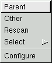
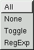

|
|
| LICENSE | GUIDE | INTRO | USAGE | CONFIG | HISTORY | CONTRIBUTING | ACKS |
This section describes the use of menus in gentoo. In this early release, the menu support is extremely limited; there's just one menu, and its contents are hard-coded...
If you've only used gentoo for a couple of minutes, or perhaps just observed what it's supposed to look like on the screenshot, you might think that there are no menus. After all, there's no standard menu bar at the top of the window.
This is because there are no normal menus! The only menu currently available in gentoo is a simple "pop-up menu". It is accessed by placing the mouse pointer somewhere inside a directory pane, and then clicking (and holding down) the right mouse button. A small menu with the following options appears:

The items are, in order of appearance:
 |
Select all items in current pane. |
| Unselect all items in the current pane, thus clearing the selection. | |
| Toggle the selected/unselected state of each row. Inverts the set. | |
| Opens up the regular expression selection window. |
{kind=link}